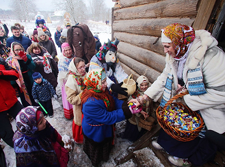
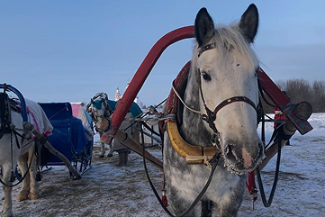
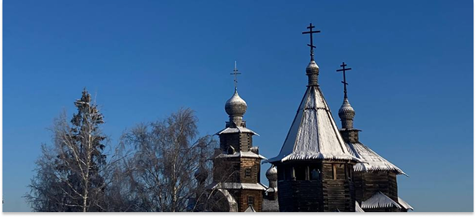

Святки
Святки. Зимние песни, несущие свет и надежду. Хождение по домам с песнями и поздравлениями, получение угощений, пожелания добра и благополучия. Обряд, объединяющий людей, отгоняющий злых духов и привлекающий удачу в новом году. Отголосок древних верований, наполненный радостью и детским смехом.
предыстория праздника
Святки или Святочная неделя — это период между Рождеством и Крещением, время, когда переплетаются христианские традиции и отголоски древних языческих верований. Само название, происходящее от слова «святой».
История Святок уходит корнями в IV век, а в VI веке церковь официально объявила 12 дней после Рождества праздничными, временем прославления Иисуса Христа. Верующие помогали нуждающимся, принося угощения в тюрьмы и больницы.
Однако на Руси православные обычаи тесно переплетались с языческими обрядами, связанными с почитанием Коляды — божества, олицетворяющего молодое Солнце и Новый год. Язычники старались задобрить своих богов, «зажигали солнце» и пекли ритуальные пряники
Традиция рядиться в звериные шкуры и страшные маски также уходит корнями в язычество. Ряженые ходили по улицам, пели песни и устраивали «шалости», подражая нечистой силе. Считалось, что в святочные дни по Земле ходят существа из потустороннего мира, и, наряжаясь таким образом, люди пытались слиться с ними, чтобы исполнить свои желания.
Главной просьбой в святочные дни был хороший урожай, а также благополучие, удачный брак и исполнение желаний. Православная церковь негативно относилась к святочным гуляньям, запрещая гадания и ряженье, призывая посещать тюрьмы, помогать бедным и прославлять Христа. Колядки сменились духовными песнями.
Однако народные традиции сохранялись, несмотря на запреты. Люди продолжали гадать и общаться с «нечистой силой», веря, что купание в проруби смывает грехи.
Сегодня Святки отмечают в основном верующие, посещая храмы, исповедуясь, причащаясь и помогая нуждающимся. Во многих регионах сохранилась традиция колядования, когда дети и молодёжь ходят по домам, поют песни и получают угощения, «славляя» Рождество.
Святки — это уникальный период, отражающий многовековую борьбу и примирение христианских и языческих традиций. От молитв о будущем урожае до прославления Христа, от церковных запретов до народных гуляний — Святки остаются живым свидетельством богатой культурной истории, где вера и суеверия, святость и разгул нечистой силы переплетаются, создавая неповторимую атмосферу праздника и надежды.
мое путешествие
Мое
Путешествие
Родившись в маленьком посёлке Каджером в Республике Коми, я с детства помню радостный перезвон колядок во время Святок. Наряженные дети и подростки, распевая песни и стихи, приносили праздник в каждый дом. Я и сама была частью этой волшебной традиции. Как же больно было осознавать, что спустя годы этот обычай угас в моём родном крае. Как же так получается?
С наступлением осени мы с таким энтузиазмом погружаемся в атмосферу Хэллоуина, словно забывая, что у нас в России есть свой собственный праздник, который во многом не уступает ему.
Я долго искала, где ещё можно почувствовать дух колядования, и мои поиски привели меня в Суздаль. Яркие образы ряженых, хороводы и обрядовые шествия манили меня, обещая настоящее погружение в атмосферу Древней Руси.
Остановившись во Владимире, уютном и историческом городе, я легко добралась до Суздаля на автобусе. Но, к моему удивлению, по прибытии оказалось, что найти место празднования не так-то просто. Прохожие лишь пожимали плечами, не зная о Святках. Сам зимний Суздаль был великолепен: снежные горки, ярмарки, каток, катание на санях — настоящий русский колорит. Но туристическая направленность города давала о себе знать: цены на развлечения кусались, порой даже больше, чем стоимость самой поездки.
Родившись в маленьком посёлке Каджером в Республике Коми, я с детства помню радостный перезвон колядок во время Святок. Наряженные дети и подростки, распевая песни и стихи, приносили праздник в каждый дом. Я и сама была частью этой волшебной традиции. Как же больно было осознавать, что спустя годы этот обычай угас в моём родном крае. Как же так получается?
С наступлением осени мы с таким энтузиазмом погружаемся в атмосферу Хэллоуина, словно забывая, что у нас в России есть свой собственный праздник, который во многом не уступает ему. Я долго искала, где ещё можно почувствовать дух колядования, и мои поиски привели меня в Суздаль. Яркие образы ряженых, хороводы и обрядовые шествия манили меня, обещая настоящее погружение в атмосферу Древней Руси.
Наконец, после долгих поисков, мы нашли заветное место — Музей деревянного зодчества. Это потрясающее место под открытым небом, где собраны крестьянские избы XVIII-XIX веков, церкви, построенные без единого гвоздя, и купеческие дома. Здесь время словно остановилось, перенося тебя в эпоху Древней Руси.
Празднование проходило на улице, и, к сожалению, организаторы не учли, что на дворе -30 градусов. Скоморохи развлекали публику песнями и частушками, разыгрывали сценки с козой. Мы и сами пустились в пляс, чтобы хоть немного согреться. Но, к моему разочарованию, программа оказалась короткой и быстро сменилась другой, предназначенной для новой группы туристов. Если вы приехали специально на Святки, поверив красочным картинкам в интернете, то здесь, по сути, делать было нечего.
Однако судьба приготовила нам приятный сюрприз. В тот день Суздаль был объявлен новогодней столицей России. В город съехались музыкальные группы, проводились танцы, а завершилось все получасовым салютом. Это было впечатляющее зрелище, которое скрасило разочарование от Святок в тч колядок. Организация мероприятия, к сожалению, оставляла желать лучшего: обещанных гаданий не было, только песни, игры и пляски.
Наконец, после долгих поисков, мы нашли заветное место — Музей деревянного зодчества. Это потрясающее место под открытым небом, где собраны крестьянские избы XVIII-XIX веков, церкви, построенные без единого гвоздя, и купеческие дома. Здесь время словно остановилось, перенося тебя в эпоху Древней Руси.
Празднование проходило на улице, и, к сожалению, организаторы не учли, что на дворе -30 градусов. Скоморохи развлекали публику песнями и частушками, разыгрывали сценки с козой. Мы и сами пустились в пляс, чтобы хоть немного согреться. Но, к моему разочарованию, программа оказалась короткой и быстро сменилась другой, предназначенной для новой группы туристов. Если вы приехали специально на Святки, поверив красочным картинкам в интернете, то здесь, по сути, делать было нечего.
Однако судьба приготовила нам приятный сюрприз. В тот день Суздаль был объявлен новогодней столицей России. В город съехались музыкальные группы, проводились танцы, а завершилось все получасовым салютом. Это было впечатляющее зрелище, которое скрасило разочарование от Святок в тч колядок. Организация мероприятия, к сожалению, оставляла желать лучшего: обещанных гаданий не было, только песни, игры и пляски.
Вечером, вернувшись в отель, мы решили сами воссоздать атмосферу праздника. Гадали на воске, бумаге и картах, пытаясь прикоснуться к древним традициям. Грустно думать, что колядки из моего дества, возможно, исчезают, вытесняемые современными развлечениями или даже банальным недоверием и страхом перед соседями.